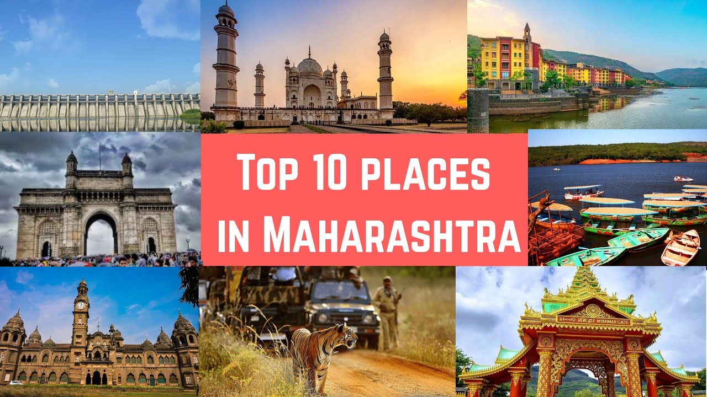

we provide a best advice to reach destination.also provide a proper guide for tourist.

we suggest a best near by places to visit and explore from your destination.

We provide best time to visit a perticular destinations for your happy journey.

We provide a proper map and distance to explore more near by places.
Maharashtra state is very well known for its growing beauty of nature and hills as well as the high standard of living of cities like Mumbai, Pune, Nasik and others.
The beauty of Maharashtra lies in the nature calling short getaways or the long tours of Maharashtra.
The Marathas army historical places and forts along with the serene coastal cities.
Take a hike or an adventure vacation in Maharashtra with unseen beautiful resorts and places, as well as the wonderful romantic holidays in Maharashtra.
The state is filled with lovely highlands, valleys, lakes, zoos, sanctuaries, forts, beaches, resorts, towns and camping sites to enjoy each travel experience at Maharashtra.
Here is List of best places to visit in Maharashtra
 Mumbai
Maharashtra,India
Mumbai
Maharashtra,India
 Lonavala
Maharashtra,India
Lonavala
Maharashtra,India

Mumbai, the capital city of the Indian state of Maharashtra, is a spectacular paradox of chaos and hope, glamour and squalor, modernity and tradition. Famously known as the City of Dreams, Mumbai – formerly known as Bombay - Mumbai is a beautifully blended melting pot of cultures and lifestyles.
Best Time: October to FebruaryPune is a bustling metropolis of Maharashtra, ranked number one in India in the ease of living. Often referred to as the Oxford of the East, it is a hub of diverse people and activities and is in rapidly growing into one of the top metropolitan cities in the country.
Best Time: july to marchBeach town on the Konkan coastline, Ganpatipule has temples of Lord Ganesha as major attractions apart from the beautiful virgin beaches.Ganpatipule is a small town in the Ratnagiri district in Konkan region with a long stretch of pristine beaches, Ganpatipule is a perfect idyllic getaway in the slip of nature.
Best Time: November to FebruaryAurangabad, which was declared by the Government as the Tourism Capital of Maharashtra back in 2010, is a famous tourist hub which greets its visitors with a richly woven tapestry of sights and sounds.The name of aurangabad is changed as a SAMBHAJINAGAR from 2023.
Best Time: October to March
Mahabaleshwar is a hill station located in the Western Ghats, in Satara district of Maharashtra. Apart from its strawberries, Mahabaleshwar is also well known for its numerous rivers, magnificent cascades and majestic peaks. It is among the most sought after weekend getaways from Pune (120km) & Mumbai (285km).
Best Time: October to JuneLocated at a distance of 122 Km from Nasik in the Ahmednagar district of Maharashtra, Shirdi is the home of Sai Baba. It is believed that Sai Baba arrived at Shirdi in 1858 and spent 60 years of his life here until he attained salvation in 1918. Shirdin is alos known as "The Land Of Sai Baba".
Best Time: October to March